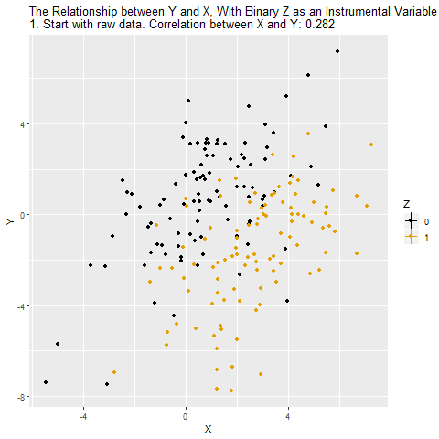
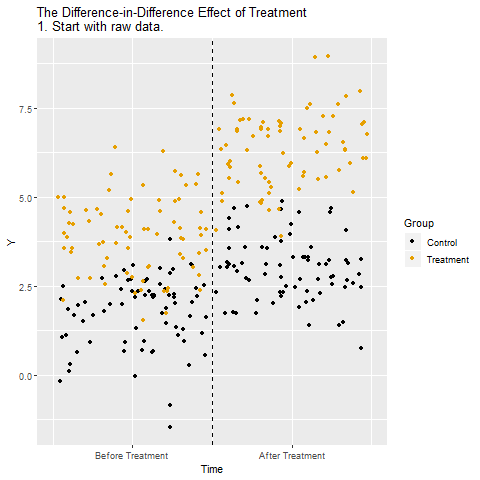
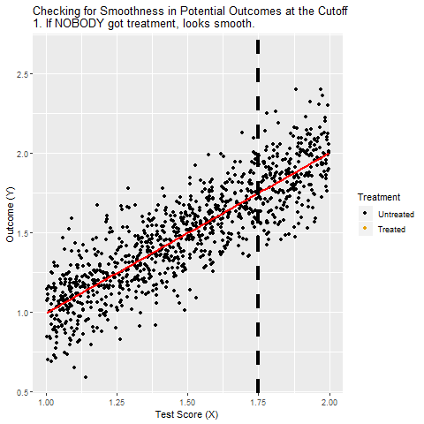

$$ \newcommand{\uns}[1]{\mathbf{1}[#1]} $$
Statistical Tools for Causal Inference
Introduction
I The Two Fundamental Problems of Inference
1
The Fundamental Problem of Causal Inference
1.1
Rubin Causal Model
1.1.1
The treatment allocation rule
1.1.2
The potential outcomes
1.1.3
The switching equation
II Natural Experiments
2
Natural Experiments
2.1
Finding Experiments in Nature
2.2
Instrumental Variables
2.3
Difference-in-Differences
2.4
Regression Discontinuity
III Observational Methods
3
The Purpose of Observational Methods
3.1
Multiple Regression
3.2
Matching
3.3
Sufficient Adjustment Set
3.4
Fixed Effects
3.4.1
Between and Within Variation
3.4.2
Demonstration of Fixed Effects
3.4.3
Fixed Effects with Regression
3.4.4
Common Extensions
3.4.5
Coding Up Fixed Effects
Published with bookdown
Statistical Tools for Causal Inference
Chapter 2
Natural Experiments
2.1
Finding Experiments in Nature
2.2
Instrumental Variables

2.3
Difference-in-Differences

2.4
Regression Discontinuity
